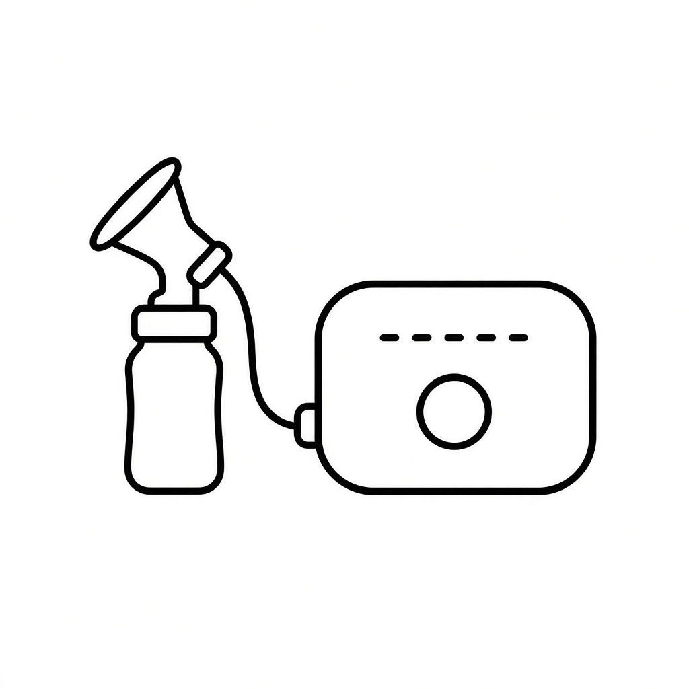
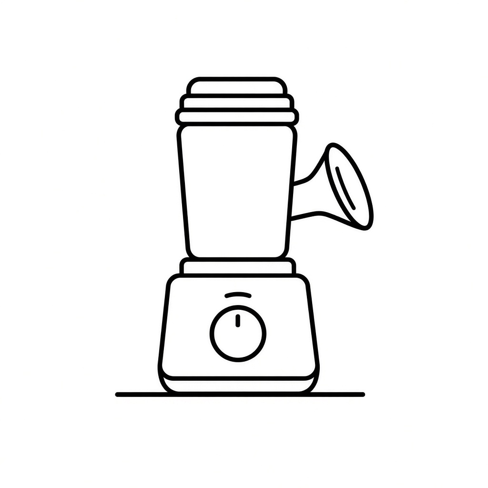
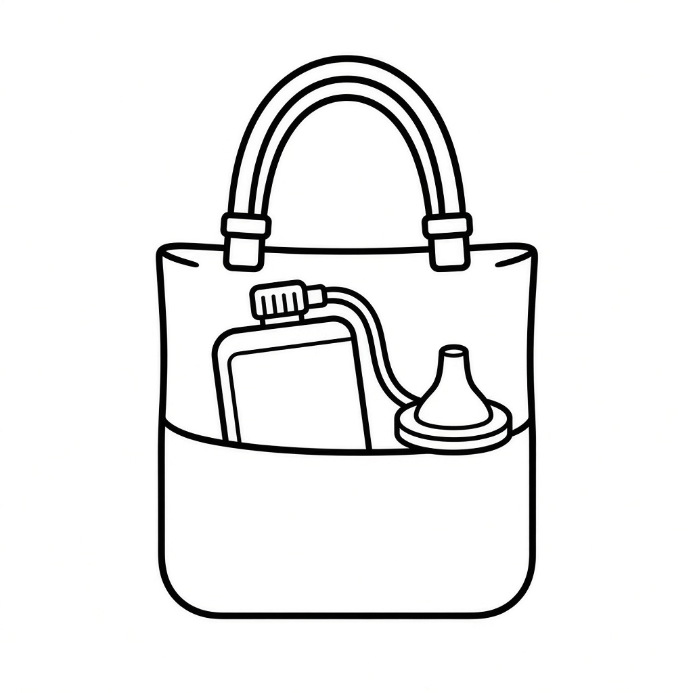
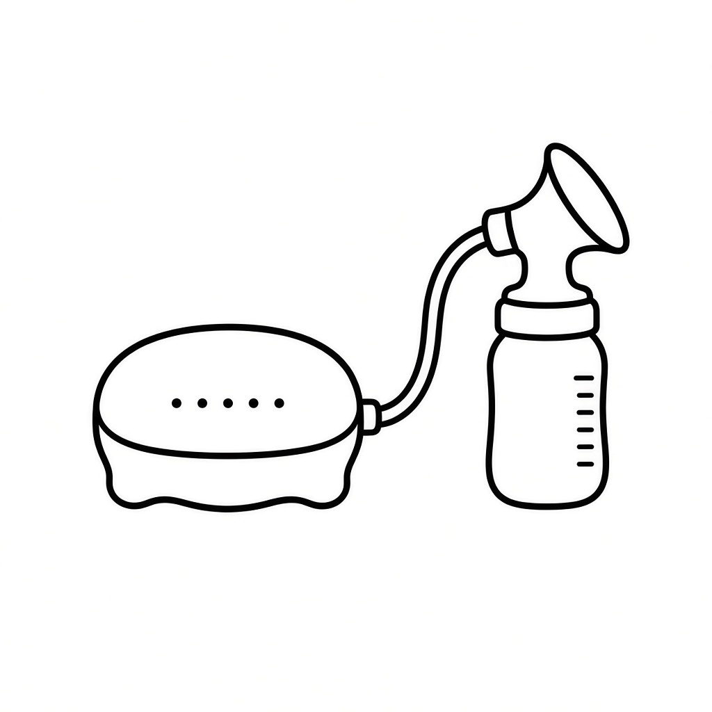
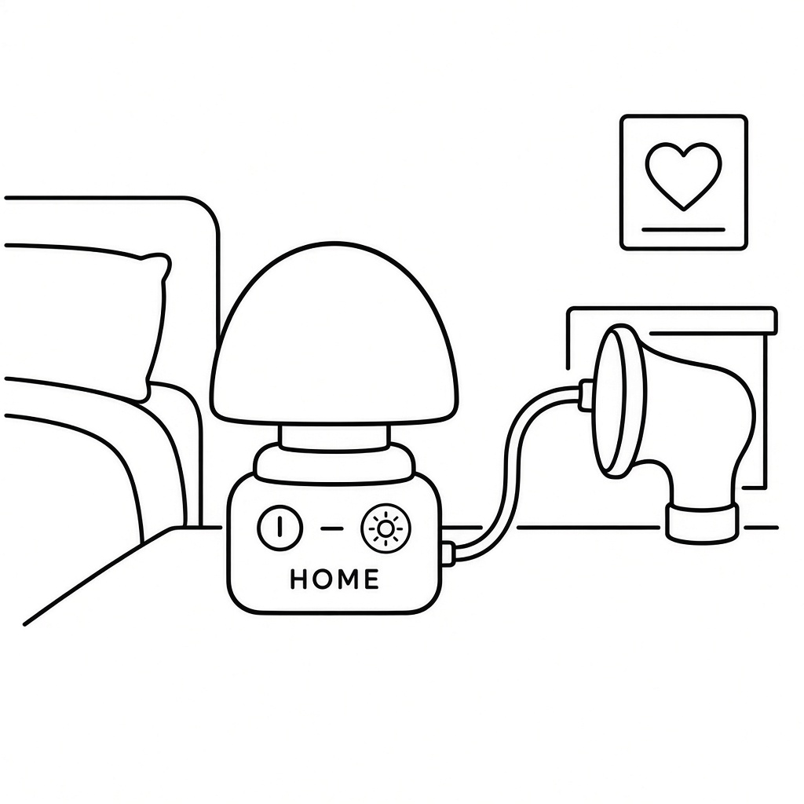
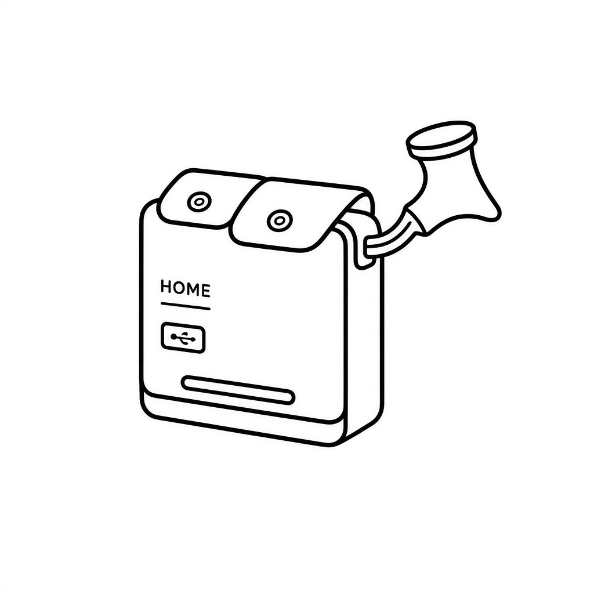
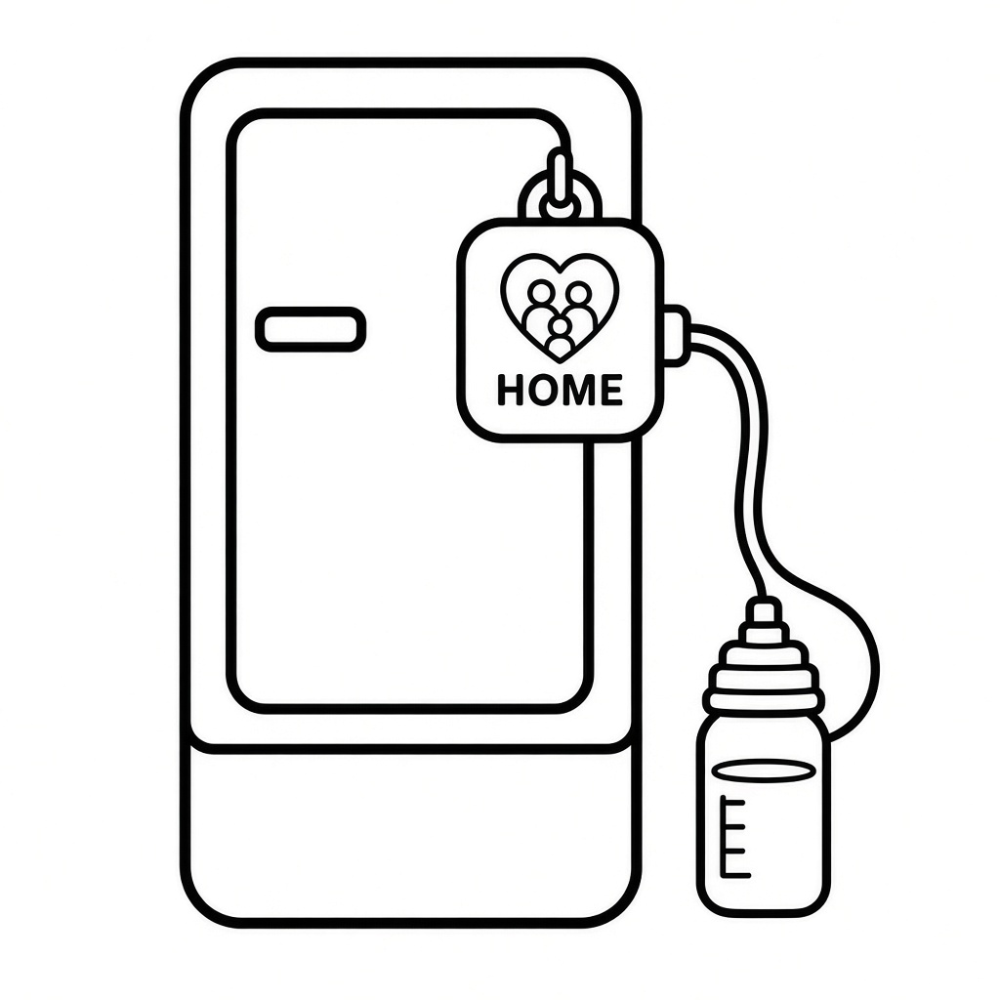
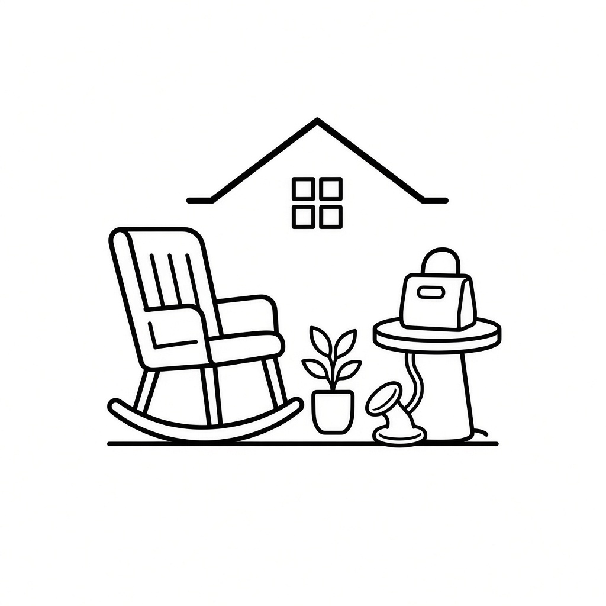
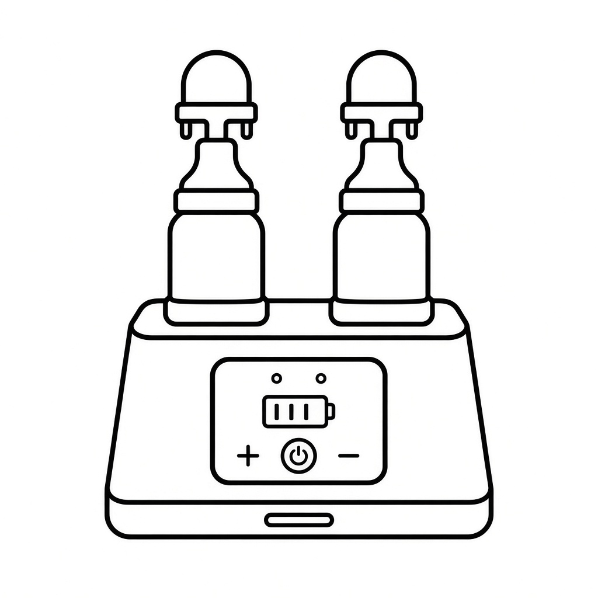
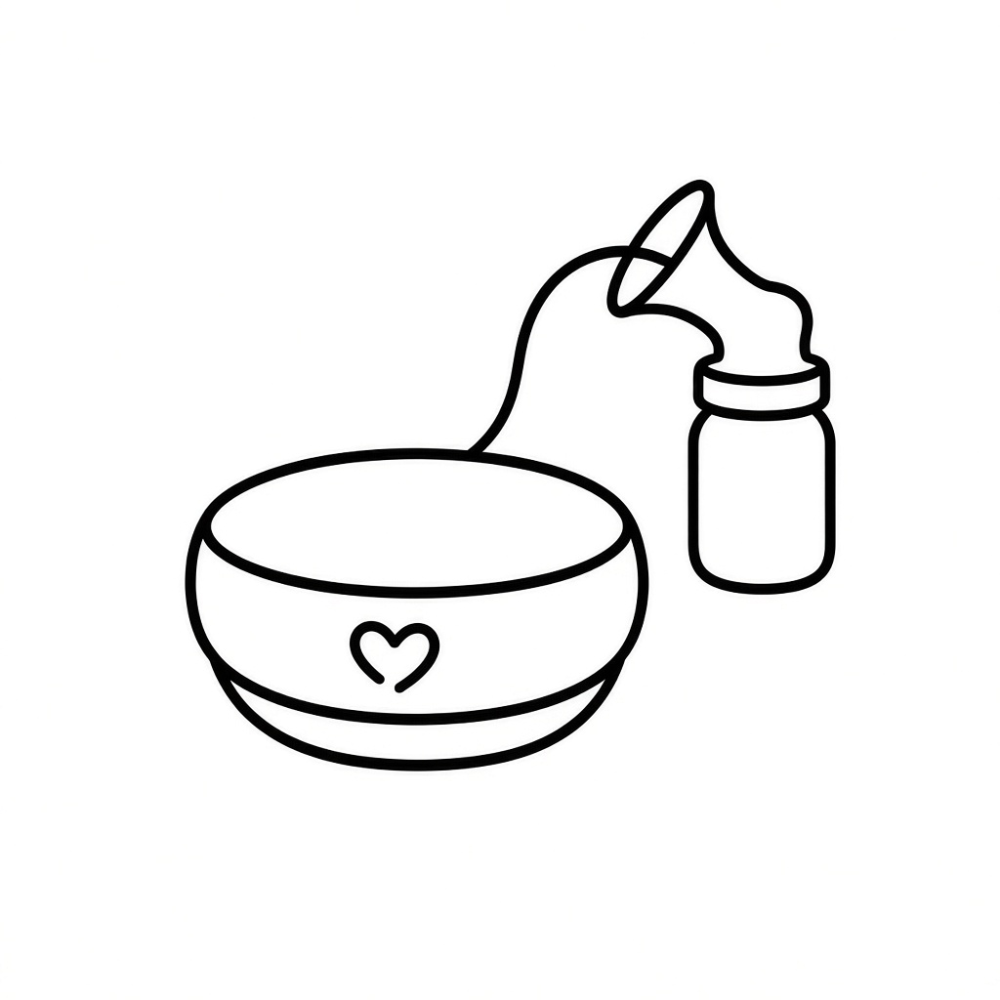

At-home / domestic consumer pumps (bedside, kitchen, nursery). All machines PM1–18 · Bottle icons A–W

Soft rounded unit, LED row, big button

Blender-base dial, bottle docked on top

Tote bag with pump brick + hose peeking

Pillow-shaped motor for lounge use

Dome night-light base with hose

Flat wallet pump, USB, tiny hose

Pump on fridge outline, bottle dangling

Pump box on side table + flange

Coffee-maker style dual bottle docks

Friendly oval body + heart, hose + bottle